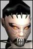

| Pages (3): [1] 2 3 » |  Last Thread Next Thread Last Thread Next Thread  |
| Author | Thread |
| Zeth Leetas Registered: Sep 2001 | PVP = Worthless To be honest, the only reason why I continue to play AO is because I can pvp in it. Other than pvp, this game has nothing. Its just another boring level like hell game. How much fun can you have by pressing TAB, Q. TAB, Q. TAB, Q. Thats all this comes down to. I was happy with the pvp before Funcom messed it up. Yes, I am a soldier, and I do enjoy my Burst/Fling/FA combo, but you know what? It's not "instakill" like many think. Beam-weilding Enforcers own me because of their massive HP and crits. Long range AS Agents own me. Wall-exploiting NTs own me. Rooting Fixers own me. DOTing MAs with their brawls and Dimach own me. In fact, THE ONLY THING A SOLDIER HAS IS HIS SPECIALS. Do you realize how weak and pathetic Novaflow hits are? Now, because of this stupid patch, EVERYTHING IN PVP IS MESSED UP. Here are some great examples: I was dueling both an enforcer and solder at the same time for 10 minutes straight. NO ONE WAS ABLE TO KILL EACH OTHER. Pathetic, eh? I was dueling an Adventure that kept hitting me for a constant 7 HP of damage, yet I couldnt kill him. Our battle lasted 5 minutes because he constantly healed himself. A level 100+ Doctor couldnt be killed by 4 other level 100+ characters because all he did was heal himself. The only people who *****ed at the pvp were the people who sucked it at, honestly. The only people who could compete in the hardcore pvp matches were the ones who constantly updated their armor/weapons/implants/nanos. Now, after the patch, I am completely worthless. I cant kill anything or anyone. The ONLY classes that CAN pvp now are Doctors, MPs with healing pets, and Beam Weilding enforcers with their crits. I swear, this is a joke. If the old pvp isnt brought back, I might as well cancel my account. As I said, the only reason I play this game is for the pvp concept, something of which Funcom has totally mangled up. Zeth - Level 45 Novice Solitus Soldier rerolled - Level 80 Rookie Atrox Soldier Last edited by Zeth on November 18th, 2001 at 08:42 |
 November 18th, 2001 08:39 November 18th, 2001 08:39 | #1 |
| Mor Phear Leet Registered: May 2001 | The pvp is more balanced then ever before. I was testing it out and watching duels. So far I like what I see. I do admit though, the soldier prof *should* get a fix sometime soon like the rest of the profs. It didn't really need one before, but now it can use one after all the nerfs. |
| November 18th, 2001 09:20 | #2 |
| Kinkstaah unimpressed by your post  Registered: Jun 2001 | Only thing soldiers need are maybe some slightly more useful nanos. Other than that they are looking good. And when you think about all the buffs you guys get for your weapons, you already have fairly decent nanos. |
| November 18th, 2001 11:02 | #3 |
| Cheddar Soleet  Registered: Nov 2001 | I think it's alot better now. The same people who killed me before generally still kill me now, but at least the fights last long enough for me to see what's going wrong. Seriously, under the old rules I've been killed in under 1 sec on many, many occassions. I've been able to win a few fights now that I normally wouldn't have because I had the time to make some nano choices during combat. I like to think making choices equates to strategy... at least it does for my class. I've also seen some really interesting battles with pet classes, and even some solid wins by engineers and mps. One the other hand, Funcom does need to address this business about tank armor and nano costs. This new nerf eliminates choices from the soldier class, and thereby reduces the class to special attacks. |
| November 18th, 2001 11:16 | #4 |
| roodawg Eleet  Registered: Nov 2001 | Zeth you worm. You've forced me to do something I didn't think I'd ever do; agree with you. How dare you force me to do this. PvP from my perspective is the same as Zeth's. I posted about this elsewhere. I fought an MP 3 to 5 levels below me. Now that means I have an instant advantage right? Now this was a duel in the Tir arena. I am well equipped, not uber. I could equip better everything but don't currently wish to do so. Saving creds for a Yalma you see. Anyway, I am not a slouch. My fight with this mp lasted long enough for me to get in around 4 or 5 first aid heals. How long is that 4 minutes? I open with my "fixed" special, an aimed shot. Whoopy took the mp to 60% of his health with my first shot. After countless reloads on my 5 shot weapon and those first aid heals I was nearing death. Decided that retreat was a viable option. When I ran my opponent was still at full health. I dealt an average of 200 points of dmg/shot. !!!!!! He was at full health. I can still win in PvP but only against the other combat classes. Any healer, even those that are casual PvP'ers can't be killed. So what did I spend those 100's of hours equipping my character for. Shopping for implants, armor and weapons. You realize that we agents outgrow our rifles every 3 to 4 levels. Now all you have to do is make an MP, Adv, MA character, slap some stuff on em and go rule in PvP. No work and no dedication to training your characters and you call this improved and good. Hah. Zeth I agree with you, please don't make me do this too often makes my head hurt. |
| November 18th, 2001 12:08 | #5 |
| AnotherFixer Supa Leet  Registered: Nov 2001 | The only people that complained about pvp were those who sucked at it!? What a load of crap. Your saying to be successful, all you had to do was upgrade your equip to insane levels? First, this shouldn't have had to be done to be viable in PvP. The need to overequip makes AO far too equipment centric, but for arguments sake, lets take this as fact. Personally, I didn't like trying to deck myself out as high as I could ever few levels, but to prove a point, at level 50 I saved as much cash as I could made two full sets of implants and equipped just about the best stuff you could possibly use at that level. I was pushing 2000 AC in not just the mains, but in ALL armor classes except Poison. I was pushing 1900 self buffed HP and used a QL 106 mausser. I employed sound tactics and used every debuff I could in the general line against my opponents. The result? I still never won a goddamn PvP engagement other than against engineers and the like. As such, PvP successed was 90% based on profession capability. There is no argument against it. The changes in PvP, while perhaps not the best fix (they should fix things on the profession level) allowed most professions to compete in PvP on equal levels. You stated that the only people crying about PvP at first were those who sucked at it. Like I said....horsecrap. What's true now is the only people complaining about it were those (a certain overequipped soldier comes to mind) that can no longer hit the burst button and hit like level players for 2700 damage in one shot. Cry me a river. |
| November 20th, 2001 16:44 | #6 |
| Zeth Leetas Registered: Sep 2001 | PvP quote:So, what you're saying, is that only Doctors, MPs with healing pets, and Adventuers with healing capabilities should be the ONLY ones to duel? THAT'S horsecrap. I've talked to dozens of people, many of which the people I've come across who are GOOD at dueling, and asked them what they think about the new patch. They all agree, they all HATE the new patch. Enforcers, Soldier, MAs, Agents, Fixers, EVERYONE hates this patch. But guess what. I've also talked to a selected few MPs and Doctors, and they LOVE the new patch. I wonder why. <g> And why are you complaining about having to equip your best to duel? You must be at your full potential to stand up against the hardcore pvpers. If this is something that is too hard to understand, then maybe you should do us all a favor and stay away from all 25% and 0% zones. Maybe everything SHOULDNT be equal in this game. Why are people so fixed on the idea that EVERYTHING in a game should be equal? Maybe a Soldier SHOULD beat an Engineer. Maybe an Enforcer SHOULD beat a Beurocrat. Maybe a MA SHOULD beat a Doctor. You want equal? Then why not have ONE profession in this game, with ONE weapon, and ONE nano? There, that should be equal. <g> Do you realize how stupid you sound now? Like I said, I honestly hope that Funcom goes back to the old pvp system, a system in which every other game uses. Zeth - Level 45 Novice Solitus Soldier rerolled - Level 80 Rookie Atrox Soldier ..and soon to be level 40 dueling MP .. |
| November 21st, 2001 00:54 | #7 |
| Mugginns Eleet  Registered: Nov 2001 | "And why are you complaining about having to equip your best to duel? You must be at your full potential to stand up against the hardcore pvpers. If this is something that is too hard to understand, then maybe you should do us all a favor and stay away from all 25% and 0% zones." According to what I have read, I can infer that the crux of AO is pvp combat in a storyline, seeing who will win etc. Denying people the right to play in the storyline simply because they do not have level 200 friends / and or are children with tons of time on their hands makes no sense. Extreme overequipping is wrong, and needs to be fixed with an "Un-equip" day. "Maybe everything SHOULDNT be equal in this game. Why are people so fixed on the idea that EVERYTHING in a game should be equal? Maybe a Soldier SHOULD beat an Engineer. Maybe an Enforcer SHOULD beat a Beurocrat. Maybe a MA SHOULD beat a Doctor. You want equal? Then why not have ONE profession in this game, with ONE weapon, and ONE nano? There, that should be equal. <g> Do you realize how stupid you sound now?" You don't even realize what you are saying. By saying that soldiers should be the absolute best at pvp combat and no one else, you are basically making a 1 class game. Wee, lets all roll soldiers. How fun. Then we could call it Soldier Online instead. <g> Do you realize how stupid you sound now? Any class should be able to defeat any class, via brute force or via tactics. If you do not believe this, well... you are most likely a soldier/agent/enforcer, and your pvp comments really don't count. Remember, it's a game. There is a level playing field. Have you ever heard the phrase, "Any given sunday?" (No I am not referring to the bad football movie). On any given Sunday, any football team can win... it is not pre-determined by where the team is from, or who plays on it. It is down to skill and luck. Not who can press the burst button faster. "Like I said, I honestly hope that Funcom goes back to the old pvp system, a system in which every other game uses." Untrue, I do believe EQ (*the* mmorpg) used a system in pvp where nukes did a certain amount of dmg less than the norm, say half, since the upper level nukes would do so much dmg to melee classes. ~MUGGINNS.~ |
| November 21st, 2001 03:09 | #8 |
| Zerosignal Supa Leet  Registered: Nov 2001 | PvP is borked and funcom know it, A soldier with low light and crit buff cannot kill a similar lvl doc, who just puts two dots on and then heals non-stop. <- That is wrong Heals are too powerful in pvp. Its simple math you take away 50% of the damage, but the heals are still based on the old system who do you think is gonna win the guy doing 50% damage or the guy doing 100% heals..... hmm i wonder. Ive said it before. All this patch has done is take the power away from Soldiers, Agents,NTs,Enforcers and handed it Mas,Advs,Mps,Docs,Engs(pets do 100% damage still) |
| November 21st, 2001 04:23 | #9 |
| Garzu Supa Leet  Registered: Nov 2001 | I never thought i would agree with a soldier when it comes to PvP in no degree at all, i dont think its fair to instakill tho. But I am an NT, even I want the old rules back, this 13.0 bull PvP capping ****, is plain and simple horse****. NT was UBER nerfed this patch, we lost our range, how in H**L do you think we can stand toe to toe with anyone? Not only that, they reduced dmg to 50%, but they forgot to reduce the nano cost by 50%. As it is now, its not even theoretically possible to kill a equal level player with an NT, we simply run out of nano. I have to say, this patch is the worst ever for NTs, yes, even worse than 12.6. Funcom please give our range back, and lets go back to the good old dmg system. |
| November 21st, 2001 04:51 | #10 |
| Isisnorfret Phear Leet  Registered: Nov 2001 | The power was givin to MP eh? Just today my 81 enf dueled a lvl 80 mp. MP died in about 10 seconds (then i stood there fighting her pets for like 5 minutes). MP's are only good at pvp in earlier lvls, in later lvls thier pet heals/damage aren't good enough to keep them alive anymore. Anyway, power was not taken away from enforcers, they are a healing class too. Mongo bash + nano kits = 2k hp healed every minute. I don't mind the full heals, it just changes the strategy around a bit. I do agree that soldiers need looked at though. Another thing, we should do half damage against someone's pet. Pets have the hp of a mob, so it doesn't make sense that we should need to do half damage to them. There's an obvious disparity - fight someone's pet and never kill it or, kill them and run from the pet. |
| November 21st, 2001 05:13 | #11 |
| Frodur Leetas Registered: Nov 2001 | <G> Zero have u ever tought about that ur SHIELD maybe uber now??, i've seen soldiers that now are whining that it has to last longer since the fight last longer... Not long ago i was in 2ho "PvP" with my noob, and i actually watched u in action... Zoning in and out of shops and wompa only when ur shield and alphastrike was rdy to go..! So i have pretty mutch seen ur idea of PvP .-) Have u ever tought of that maybe when ur shield has taken away 75% dmg of those dot's they wont be worth **** after 13.0 and casting dot's for a lvl 100 doc drains almost 1/2 the nanopool, and at the end they will do like 500 dmg to a equal soldier after shield and firstaid, and yes heals would counter a lot of dmg for a while, but the lvl 100 doc will never have nano anough to refrech those dot's, all he can do is heal untill nanopool is dry. And heals, hmm.... yes prepatch no doc was able to heal himself out of that alphastrike or a toe on toe fight with a "god" soldier. And actually i agree, a soldier should in most situations own a doc but that alphastrike was not god for PvP at all. And doc's nanopool aint made to last forever, so at the end soldiers would most likely bring down equal doc's 9 out of 10 times. Only time equal casters could actualy beat a soldier was when they could strike from long distance and avoid alphastrike. I lost ALL my fights with soldiers i ended up toe on toe with, and i don't mind :-) But i also enjoyed all those times i cought a soldier with no shield and managed to stack 2 dot's on him before he could attack me back :-) And btw there are still cpl professions out there that TOTALY owns any given healer or caster :-) So lets face it FC, bring back the old system try figure out a better way to balance professions, if not start working on making cap on debuff-spells & defence buffs. And yes i think the old PvP system was way better then what we have now, if they only took away that instakill, maybe with that 40% cap fight would last prolly last so long that we could actualy enjoy that "rush" of being in a fight. Now it gets boring after 1 min and we all still are at full hp. |
| November 21st, 2001 06:10 | #12 |
| Zerosignal Supa Leet Registered: Nov 2001 | Re: Sigh... quote:The TMS is currently bugged, in that you cannot switch weapons while it is running and it also interfers with weapon reloading so it not to much use. There is something wrong when i can land two crits for 1k damage in a row and still have the doctor beat me. Healing is out of wack, pre-nerf damage i may have done enough to kill a doc, but in this nerfed state a doctor can out heal your damage till the dot kills you. |
| November 21st, 2001 06:55 | #13 |
| Jabz Leet Registered: Nov 2001 | I dunno.. So I'm new to this game.. But I've had PvP experience on text based games.. No it aint the same.. But I've been doing it for 4 years so I figure I should mention that I'm familiar with the aspects of taking someone down. This pets doing max damage is jacked, if true and needs to be looked over imho. Heal Vs dmg.. Seems pretty unbalanced too, but I can't comment on that.. This game is still pretty young, right. Maybe this aint the perm solution to PvP(I hope it aint) So creating a character for what is best -right now- might leave you with your organs in a mailbox in 3 months. I think, like some that in 1-1 PvP combat, soldier of equal gear and lvl should take down a common Doc of the same.. A party of a good Doc, good MP good Soldier and good Engineer, however. Should easily take down a group of 4 soldiers.. Each profession should have it's place in a group, this is after all a multiplayer game.. 1-1 however. The fighting classes should have the advantages, in my humble opinion anyway. Looking at it from another perspective, however - This isn't my opinion, but I like to keep balance to my opinions. A doc doesn't have to be a physician, medic(theese are examples of all classes).. Nor does a MP have to be a bald old guy that reads books, those classes should be able to specify themselves on PvP as well if they lay all their efforts there(Like soldiers most commonly do) A battle doc, focusing all his medical skills to make you -hurt- instead of treating broken bones on cute racoons should be able to make.. Just like an MP guiding all the negative energies of cosmos or whatever into general nastiness.. If a player, of any class, really puts down all his IP and efforts into frontline, PvP combat they should have equal benefits and drawbacks.. Back to my opinion. I like to think of PK as a category of RP, where RP should be the summoning factor of any RPG, if I have a fixer I'll RP him being just that, doing fidgetty things to help the cause.. Not doing warrior things to help the cause - That is why I think warrior classes should excell in combat.. What other benefits are there to them? The whole game doesn't circle around Playerkilling.. If actual -useful- things could be performed that hurts the other side or helps yours, useful things that dont mean killing them all, by fixers, MP's Doc's, Techs whatever then maybe it wouldn't be such a big deal who kills who in the arena.. But that's another category.. Hope I made any sense, thoughts from a 1-0 PK-record on AO Newbie Soldier. |
| November 21st, 2001 11:59 | #14 |
| Zeth Leetas Registered: Sep 2001 | PvP quote:First off, I think you're missing my entire point and twisting words around. Whoever said that the actual AO storyline is based solely upon pvp combat? Do you honestly think Funcom is going to make a CG Movie for the story AFTER a couple people have dueled? No, everything is already predetermined. I cant speak for anyone else about this, but I have no level 100+ friends who help me equip what I have. Everything I do is on my own. All the effort, all of the hours, all of the goddamn calculations with stats/buffs/implants/weapons are now a total waste thanks to Funcom's choice to F up pvp in this game. As I said before, pvp is something that is fun to me, in fact, pvp is the ONLY thing that makes this game fun to me. No one HAS to pvp. Dueling is just a way to determine how your character stacks up against others, thats all. If you cant keep up with the rest of the crowd, then maybe you shouldnt even try. "You don't even realize what you are saying. By saying that soldiers should be the absolute best at pvp combat and no one else, you are basically making a 1 class game. Wee, lets all roll soldiers. How fun. Then we could call it Soldier Online instead. <g> Do you realize how stupid you sound now?" When the hell did I ever mention that soldiers should be THE best? I merely said that EVERY class shouldnt be equal. In my opinion, PREPATCH, Enforcers were the best pvp class, then to a close second, Soldiers. Agents, if done right, could possibly own anyone, but then agan, so can a well done MA. Now, Docs and MPs own everything. Do you really enjoy that? Oh, and thanks for bringng up EQ. EQ was the entire point so I could play this game, BECAUSE ITS NOTHING LIKE IT. Well, besides from your standard "kill, level, kill, level, kill, level" boring crap. And, as I said before, this game has nothing completely new to offer. Its your standard level like hell game, and without pvp, this is one dull game to play. Last edited by Zeth on November 21st, 2001 at 18:06 |
| November 21st, 2001 18:02 | #15 |
| AnotherFixer Supa Leet Registered: Nov 2001 | Ok, I'll use your own logic to support my arguement. Zeth seems to be saying that not all classes should be equal. "Perhaps a soldier should be an engineer". Guess what? I agree. Funcom stated themselves that PvP was supposed to be based on the scenario that each profession would have inherent opponents they could beat more easily and other proffessions that would beat them more easily. As such, yes, perhaps a soldier should not lose to an engineer very often. However, PvP before the change was FUBAR. Zeth, you think any profession of like level stood a chance as you pressed one button and had your twinked soldier do 2700 points of burst damage alone? If you didn't play a soldier, agent, MA, or MP, you were probably going to get your ass kicked more often than not. Pet classes, advents, fixers....playing these and trying to PvP was like pounding your head against a wall. As I stated in my first reply, I don't think this fix was the most appropriate, but it is MUCH better for PvP than nothing at all. They should have fixed the professions individually to truly deliver what they said, each class being able to win against some and lose against others, but apparently that was too hard for them. Can a soldier beat a like level doctor now? Maybe not. Another doctor can, or an MA or an MP could. You can't. Welcome to the world of PvP that the rest of us have been living with since day one. |
| November 21st, 2001 19:13 | #16 |
| Beartwo Supa Leet  Registered: Nov 2001 | Though I agree with some of your arguments, I seem to find it hard to sympathize with you. I have fought you, and I have been killed by you. You are a coward of high rank! My 69 soldier is a first time character with average stats... not even close to twinked. As a previous poster said, u zone in and out of 2ho shops while fighting, if anyone comes close to hitting you when you havent been able to overequip that ubertwinked soldier of yours you run like a chicken. I seem to remember hitting you for 800dmg FA in 2ho. You ran to the health shop immediately to zone. I waited and got killed since when you came out you were fully loaded with hp`s , shield and buffs. Twinking within reason is fine.... but twinking combined with cowardly fighting is a bunch of bull! |
| November 22nd, 2001 14:49 | #17 |
| Stanbeast Eleet Registered: Nov 2001 | soldiers suck all around. Plz fix this I am not going to re-roll and am not going to put up with this for very much longer. |
| November 22nd, 2001 17:30 | #18 |
| Mugginns Eleet Registered: Nov 2001 | "Whoever said that the actual AO storyline is based solely upon pvp combat? Do you honestly think Funcom is going to make a CG Movie for the story AFTER a couple people have dueled? No, everything is already predetermined. " What is AO based on? The conflict between Omni-tek and the Clans...what does this mean? Pvp. Not duels. PVP. Real war. Not twink vs. twink as you would have it. "As I said before, pvp is something that is fun to me, in fact, pvp is the ONLY thing that makes this game fun to me. No one HAS to pvp. Dueling is just a way to determine how your character stacks up against others, thats all. If you cant keep up with the rest of the crowd, then maybe you shouldnt even try. " This is bull, don't insult me, I am a good pvper that uses skill, not equipment to win. I don't hit others for 400+ a hit (post patch). I don't have 4000 ac. I use my brain and skill to win, not pressing the 1 button then hitting q or whatever. "When the hell did I ever mention that soldiers should be THE best? I merely said that EVERY class shouldnt be equal. In my opinion, PREPATCH, Enforcers were the best pvp class, then to a close second, Soldiers. Agents, if done right, could possibly own anyone, but then agan, so can a well done MA. Now, Docs and MPs own everything. Do you really enjoy that? " Not true. Maybe for a person with no skill...but I personally have beaten many adventurers and MA's (who are healers) over the past few days. On another point, if you say that some classes should be inherently better, you are making it the agent/enforcer/soldier game. There is nothing else to be said. If you want to play the agent/enforcer/soldier game, that's your problem. Maybe you should try EQ really...they have class dependency. Seriously though, have you ever played Starcraft? Three different races with many different play styles, anyone can win, the zerg don't always win because they look cooler, the terrans don't always win because they have bigger guns. I don't know how many more times I have to explain it to a soldier, but most people want a fair game, not the soldier game. As to bringing up EQ, I brought it up to contradict your "point" that no other game uses scaled pvp dmg...EQ does it, and it is the preceding MMORPG to set the standard for all MMORPG. If you cannot understand what that means...maybe you just shouldn't post. ~MUGGINNS.~ |
| November 22nd, 2001 18:28 | #19 |
| Lowburn Eleet Registered: Nov 2001 | Pets only do half damage, they fixed that before they released it to live servers - BUT - pets do have a high min damage.  I think crats have the best advantage in pvp as a pet user, since they can root someone and make sure they don't run away from the pet - if they can survive. Engineers are probably second best, since they can get a high level pet due to the amount of pets available at both low and high level. MPs are best early level, but as someone said, it doesn't last, and the heal pets won't do jack diddly against a twink. They don't have a new pet every other level like engineers do either. I think crats have the best advantage in pvp as a pet user, since they can root someone and make sure they don't run away from the pet - if they can survive. Engineers are probably second best, since they can get a high level pet due to the amount of pets available at both low and high level. MPs are best early level, but as someone said, it doesn't last, and the heal pets won't do jack diddly against a twink. They don't have a new pet every other level like engineers do either. |
| November 22nd, 2001 19:59 | #20 |
| Pages (3): [1] 2 3 » | The saved copy (Funcom's forum archive, saved by the Wayback Machine in 2025) |
All times are GMT.